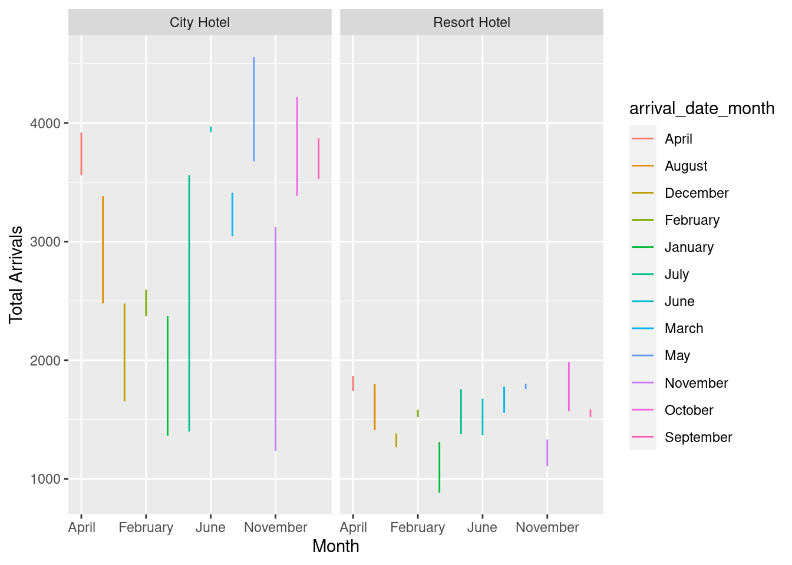
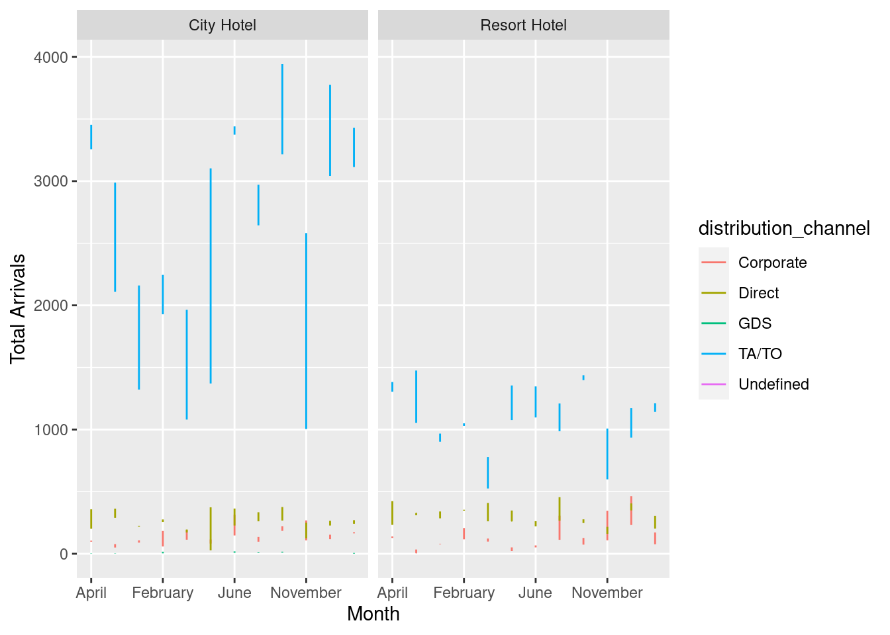

library(tidyverse)
library(ggplot2)
library(dplyr)
knitr::opts_chunk$set(echo = TRUE, warning=FALSE, message=FALSE)Challenge 7
challenge_7
hotel_bookings
Visualizing Multiple Dimensions
Challenge Overview
Today’s challenge is to:
- read in a data set, and describe the data set using both words and any supporting information (e.g., tables, etc)
- tidy data (as needed, including sanity checks)
- mutate variables as needed (including sanity checks)
- Recreate at least two graphs from previous exercises, but introduce at least one additional dimension that you omitted before using ggplot functionality (color, shape, line, facet, etc) The goal is not to create unneeded chart ink (Tufte), but to concisely capture variation in additional dimensions that were collapsed in your earlier 2 or 3 dimensional graphs.
- Explain why you choose the specific graph type
- If you haven’t tried in previous weeks, work this week to make your graphs “publication” ready with titles, captions, and pretty axis labels and other viewer-friendly features
R Graph Gallery is a good starting point for thinking about what information is conveyed in standard graph types, and includes example R code. And anyone not familiar with Edward Tufte should check out his fantastic books and courses on data visualizaton.
(be sure to only include the category tags for the data you use!)
Read in data
I read in the hotel_booking dataset, the same one which I read in challenge 4, just to be able to use the results here.
data = read_csv("_data/hotel_bookings.csv")
spec(data)cols(
hotel = col_character(),
is_canceled = col_double(),
lead_time = col_double(),
arrival_date_year = col_double(),
arrival_date_month = col_character(),
arrival_date_week_number = col_double(),
arrival_date_day_of_month = col_double(),
stays_in_weekend_nights = col_double(),
stays_in_week_nights = col_double(),
adults = col_double(),
children = col_double(),
babies = col_double(),
meal = col_character(),
country = col_character(),
market_segment = col_character(),
distribution_channel = col_character(),
is_repeated_guest = col_double(),
previous_cancellations = col_double(),
previous_bookings_not_canceled = col_double(),
reserved_room_type = col_character(),
assigned_room_type = col_character(),
booking_changes = col_double(),
deposit_type = col_character(),
agent = col_character(),
company = col_character(),
days_in_waiting_list = col_double(),
customer_type = col_character(),
adr = col_double(),
required_car_parking_spaces = col_double(),
total_of_special_requests = col_double(),
reservation_status = col_character(),
reservation_status_date = col_date(format = "")
)head(data)# A tibble: 6 × 32
hotel is_ca…¹ lead_…² arriv…³ arriv…⁴ arriv…⁵ arriv…⁶ stays…⁷ stays…⁸ adults
<chr> <dbl> <dbl> <dbl> <chr> <dbl> <dbl> <dbl> <dbl> <dbl>
1 Resort… 0 342 2015 July 27 1 0 0 2
2 Resort… 0 737 2015 July 27 1 0 0 2
3 Resort… 0 7 2015 July 27 1 0 1 1
4 Resort… 0 13 2015 July 27 1 0 1 1
5 Resort… 0 14 2015 July 27 1 0 2 2
6 Resort… 0 14 2015 July 27 1 0 2 2
# … with 22 more variables: children <dbl>, babies <dbl>, meal <chr>,
# country <chr>, market_segment <chr>, distribution_channel <chr>,
# is_repeated_guest <dbl>, previous_cancellations <dbl>,
# previous_bookings_not_canceled <dbl>, reserved_room_type <chr>,
# assigned_room_type <chr>, booking_changes <dbl>, deposit_type <chr>,
# agent <chr>, company <chr>, days_in_waiting_list <dbl>,
# customer_type <chr>, adr <dbl>, required_car_parking_spaces <dbl>, …Briefly describe the data
As we can see, this is the hotel booking data for 2 hotels over 3 years. We can also see that the dataset has 119390 total rows and 32 columns.
Tidy Data (as needed)
I will use the results from challenge 4 in this challenge and remove columns babies and company as they contain a lot of unwanted NULL/0 values. Moreover, the column arrival_date_week_number is also removed as it does not provide any special information.
filtered_data = select(data, -company, -babies, -arrival_date_week_number)
head(filtered_data)# A tibble: 6 × 29
hotel is_ca…¹ lead_…² arriv…³ arriv…⁴ arriv…⁵ stays…⁶ stays…⁷ adults child…⁸
<chr> <dbl> <dbl> <dbl> <chr> <dbl> <dbl> <dbl> <dbl> <dbl>
1 Resort… 0 342 2015 July 1 0 0 2 0
2 Resort… 0 737 2015 July 1 0 0 2 0
3 Resort… 0 7 2015 July 1 0 1 1 0
4 Resort… 0 13 2015 July 1 0 1 1 0
5 Resort… 0 14 2015 July 1 0 2 2 0
6 Resort… 0 14 2015 July 1 0 2 2 0
# … with 19 more variables: meal <chr>, country <chr>, market_segment <chr>,
# distribution_channel <chr>, is_repeated_guest <dbl>,
# previous_cancellations <dbl>, previous_bookings_not_canceled <dbl>,
# reserved_room_type <chr>, assigned_room_type <chr>, booking_changes <dbl>,
# deposit_type <chr>, agent <chr>, days_in_waiting_list <dbl>,
# customer_type <chr>, adr <dbl>, required_car_parking_spaces <dbl>,
# total_of_special_requests <dbl>, reservation_status <chr>, …Are there any variables that require mutation to be usable in your analysis stream? For example, do you need to calculate new values in order to graph them? Can string values be represented numerically? Do you need to turn any variables into factors and reorder for ease of graphics and visualization?
I performed the following mutations on the data following the results of Challenge 4
Mutations: - NULL values in agent to NO AGENT - 0 values in is_canceled to NO - 1 values in is_canceled to YES - 0 values in is_repeated_guest to NO - 1 values in is_repeated_guest to YES
mutated_data <- filtered_data %>% mutate(agent = str_replace(agent, "NULL", "NO AGENT"))
mutated_data$is_canceled <- as.character(mutated_data$is_canceled)
mutated_data <- mutated_data %>% mutate(is_canceled = str_replace(is_canceled, "0", "NO"))
mutated_data <- mutated_data %>% mutate(is_canceled = str_replace(is_canceled, "1", "YES"))
mutated_data <- mutated_data %>% mutate(is_repeated_guest = str_replace(is_repeated_guest, "0", "NO"))
mutated_data <- mutated_data %>% mutate(is_repeated_guest = str_replace(is_repeated_guest, "1", "YES"))
head(mutated_data)# A tibble: 6 × 29
hotel is_ca…¹ lead_…² arriv…³ arriv…⁴ arriv…⁵ stays…⁶ stays…⁷ adults child…⁸
<chr> <chr> <dbl> <dbl> <chr> <dbl> <dbl> <dbl> <dbl> <dbl>
1 Resort… NO 342 2015 July 1 0 0 2 0
2 Resort… NO 737 2015 July 1 0 0 2 0
3 Resort… NO 7 2015 July 1 0 1 1 0
4 Resort… NO 13 2015 July 1 0 1 1 0
5 Resort… NO 14 2015 July 1 0 2 2 0
6 Resort… NO 14 2015 July 1 0 2 2 0
# … with 19 more variables: meal <chr>, country <chr>, market_segment <chr>,
# distribution_channel <chr>, is_repeated_guest <chr>,
# previous_cancellations <dbl>, previous_bookings_not_canceled <dbl>,
# reserved_room_type <chr>, assigned_room_type <chr>, booking_changes <dbl>,
# deposit_type <chr>, agent <chr>, days_in_waiting_list <dbl>,
# customer_type <chr>, adr <dbl>, required_car_parking_spaces <dbl>,
# total_of_special_requests <dbl>, reservation_status <chr>, …Visualization with Multiple Dimensions
First, I plot the graph of the number of arrivals in each hotel every month
monthly_arrivals <- mutated_data %>% group_by(hotel, arrival_date_year, arrival_date_month) %>% count(hotel, arrival_date_year, arrival_date_month)
head(monthly_arrivals)# A tibble: 6 × 4
# Groups: hotel, arrival_date_year, arrival_date_month [6]
hotel arrival_date_year arrival_date_month n
<chr> <dbl> <chr> <int>
1 City Hotel 2015 August 2480
2 City Hotel 2015 December 1654
3 City Hotel 2015 July 1398
4 City Hotel 2015 November 1235
5 City Hotel 2015 October 3386
6 City Hotel 2015 September 3529monthly_arrival_plot <- ggplot(monthly_arrivals, aes(arrival_date_month, n, col=arrival_date_month)) +
geom_line()+
facet_wrap(vars(hotel))+
scale_x_discrete(breaks = c('April', 'February', 'June', 'November'))+
labs(y= "Total Arrivals", x = "Month")
monthly_arrival_plot
Now, we will attempt to achieve the same graph, but for different distribution channels.
distribution_channel_arrivals <- mutated_data %>% group_by(hotel, arrival_date_year, arrival_date_month, distribution_channel) %>% count(hotel, arrival_date_year, arrival_date_month, distribution_channel)
head(distribution_channel_arrivals)# A tibble: 6 × 5
# Groups: hotel, arrival_date_year, arrival_date_month, distribution_channel
# [6]
hotel arrival_date_year arrival_date_month distribution_channel n
<chr> <dbl> <chr> <chr> <int>
1 City Hotel 2015 August Corporate 77
2 City Hotel 2015 August Direct 289
3 City Hotel 2015 August TA/TO 2110
4 City Hotel 2015 August Undefined 4
5 City Hotel 2015 December Corporate 107
6 City Hotel 2015 December Direct 225dc_arrival_plot <- ggplot(distribution_channel_arrivals, aes(arrival_date_month, n, col=distribution_channel)) +
geom_line()+
facet_wrap(vars(hotel))+
scale_x_discrete(breaks = c('April', 'February', 'June', 'November'))+
labs(y= "Total Arrivals", x = "Month")
dc_arrival_plot
As we can see from the graph above, TA.TO channel contributes to the most bookings.